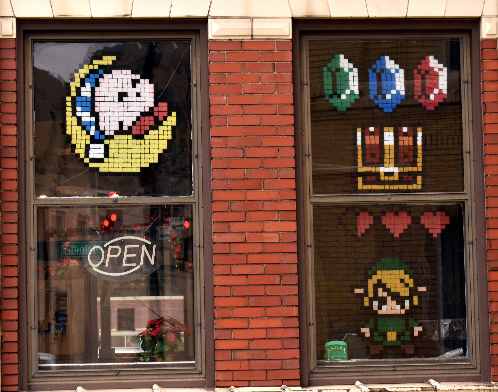
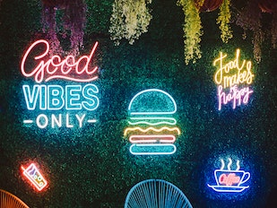

Hi there! My name is Nathan and welcome to my learning blog.
Welcome to My Brain Boost, a personal blog dedicated to charting my journey to Front-end development.
Through this platform, I aim to document my learning experiences and share my insights and discoveries
with a wider audience. I hope this blog will motivate you to pursue your own path to front-end.
Commitment to Learning
I have always had a passion for learning and staying curious. To stay committed, I set achievable goals,
regularly seek out new challenges, and take time to reflect on my progress.
I got started on this path by taking a beginner coding course and was hooked from there. Now, I am continually seeking out new opportunities to expand my skills and knowledge. By making learning a priority, I have found that my life has become richer, more meaningful, and full of endless possibilities
From Beginner to Enthusiast
My journey in learning began with a simple curiosity and a beginner coding course. From there, I was hooked. I discovered a passion for front-end development and have been continuously seeking out new opportunities to expand my skills. I take online courses, read books, and practice regularly to improve.
My passion for learning has led me on an exciting journey, and I'm excited to see where it takes me next.
Recent posts
November 30, 2022
Stage four
Getting Started with JavaScript -
The power of JavaScript was revealed to me today. I learned about variables, functions, and basic programming concepts. Excited to see what kind of dynamic interactions
I can create with my HTML and CSS knowledge combined with JavaScript.

December 19, 2022
Stage five
Making it Responsive: -
Today I learned about the importance of responsive design and how to ensure that my webpages look great on any device.
I practiced using media queries and learned about responsive grid systems. Excited to take my design
skills to the next level!
December 24, 2022
Stage six
Building Dynamic User Interfaces with React -
Today was a big day as I started learning React! I learned about components, state, and props, and how to use them to create dynamic user interfaces. I can
already see the potential for creating amazing, responsive web apps with React.